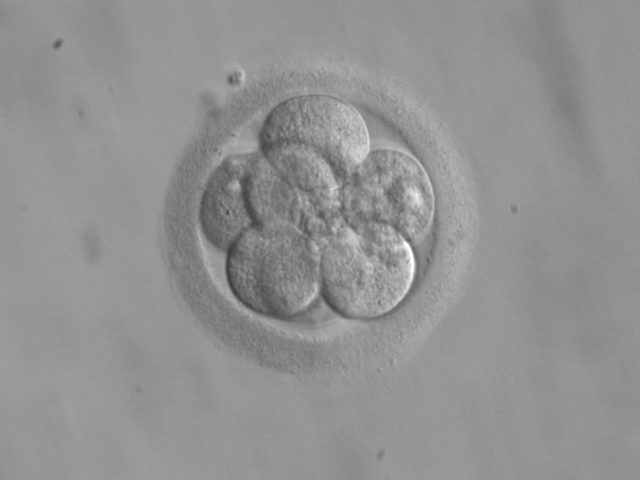

From evidence to care
Targeted and supportive treatments, gene therapy, CRISPR and pharmacogenetics: what works, what is being studied and the ethical questions.
 01
01Targeted and supportive treatments
Many genetic conditions can be treated even though the gene cannot be changed. From the disease mechanism to caring for the whole person.
Read → 02
02Gene therapy
Treating a disease by adding, changing or silencing genes. From the early failures to approved treatments.
Read → 03
03CRISPR explained
The "genetic scissors" that won a Nobel Prize in 2020. How they work, which treatments already exist and what their limits are.
Read → 04
04Pharmacogenetics
Why the same medicine suits one person and not another. The genes already checked before prescribing.
Read →
05Ethics of gene editing
Curing a disease is not the same as changing future generations. The CRISPR babies case and the rules that exist.
Read →